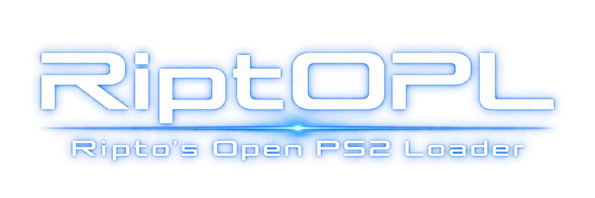
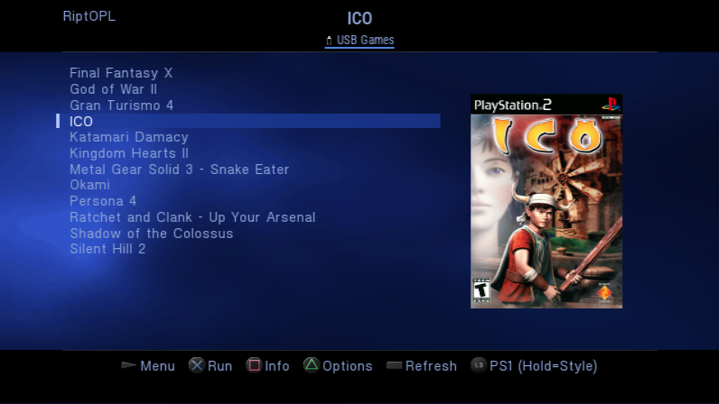
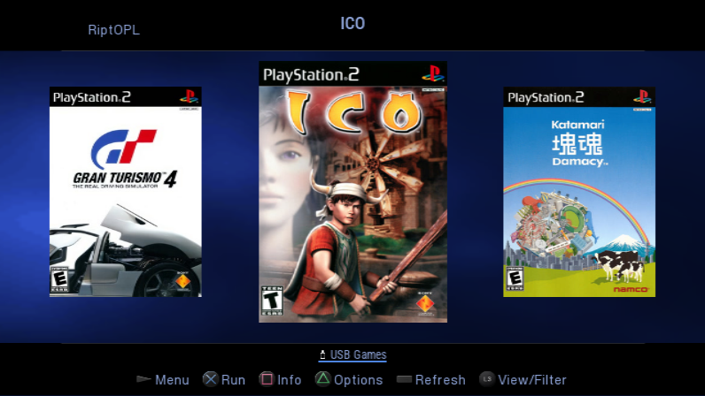
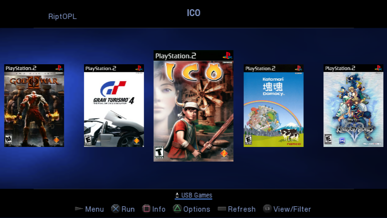
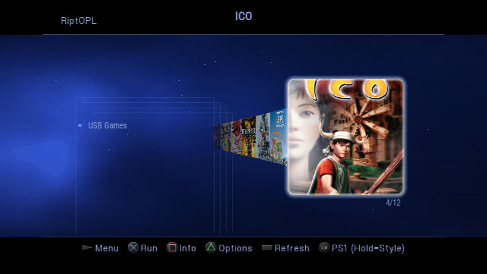
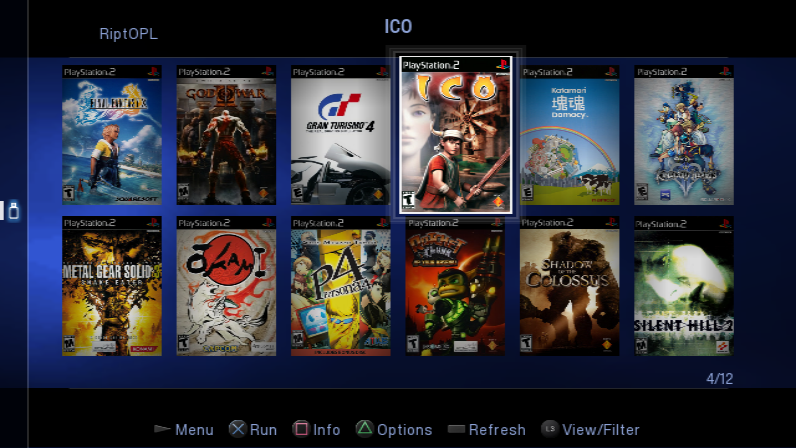
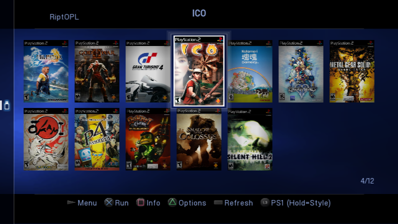

RiptOPL Documentation
A C++/ps2build fork of Open PS2 Loader for PS2 games, PS1 games and homebrew, with flexible library views, multiple storage sources and per-game core selection.
RiptOPL is affiliated with the RIPPS2 Project by Akilluminati47. The C++/ps2build work is built in collaboration with techwritescode.
The built-in PSBBN theme
Use Settings → Theme Settings → Theme View or hold L3 to switch layouts while browsing the same library. The button bar stays in the same position across layouts and labels L3 View/Filter. Tap it to cycle the library filters.












Captured in RIPPCSX2. See menu screenshots, capture details and artwork credits.
Install a kit from Releases, prepare your game folders, then enable the device under Settings → Game Sources. Sources start off until enabled. For a network library, also choose the protocol and configure the server under Network. Choose Save Changes before launching. The Getting Started guide covers the full path.
A fresh configuration uses the built-in <OPL> theme in List view, 4:3 and Auto menu video. Cover art, notifications and the PS2 logo are on; audio and menu vibration are off. Saved settings override these fresh-start defaults.
RiptOPL reads and writes settings_riptopl.cfg. Older RiptOPL conf_riptopl.cfg files are still read and migrate on save. Stock OPL's conf_opl.cfg is not imported as the master configuration. Set up this edition through its Settings hub; the Settings Reference maps the options and saved keys.
The settings home follows boot-directory discovery or Custom Settings Path; it is not always mc0:/OPL/. Network settings in conf_network.cfg, app lists, per-game configuration and support files can still be shared. Favorites import from uOPL/wOPL is one-way: the next write saves RiptOPL's OFAV format to favourites.bin, which those loaders cannot read back. Keep an original copy if you use them too.
- RiptOPL — standard LLVM/Clang install kit.
- RetroAchievements — full GCC kit with the achievement runtime and PC companion setup.
- RiptOPLite — smaller GCC loaders for one game device, with and without RetroAchievements.
Install the current full kit once when moving from an older edition. See Releases for package contents.
RIPPS2 by akilluminati47 is a PS2 front end and loader with its own interface, game libraries, Memory Files browser and save tools. It builds on the RiptOPL legacy C tree. Visit its releases for current PS2 builds.
Explore RiptOPL
- Coverflow view (optional) — a centered cover-art carousel with reflection, animated scrolling, three- or five-cover views, and aspect-correct covers in 4:3 and widescreen. Tunable live under Layout Settings.
- Optional PSBBN Flow view — darkladark's Collection-style perspective fan, with a large focal cover on the right and a diminishing tail on the left. Pick it under Theme View or hold L3; sources, artwork and launch actions are shared, and R3 remains Favorite.
- In-Game Menu (beta) — from akilluminati47's RIPPS2: the reset combination pauses an OPL-core game under a panel with Resume, live Cheats, Achievements (RetroAchievements editions), Exit Game and Power Off, with a silent pause and the exact picture back on Resume. Off by default under Settings → Game Launching. NOT TESTED on hardware.
- Multi-view themes — one theme can offer List, Coverflow, PSBBN Flow and Grid views (Grid arranges covers in rows and columns). Pick one under Settings → Theme Settings → Theme View, or hold L3 for half a second on the main page. Idea and design: KrahJohlito.
- Favorites tab — press R3 to star any game; a virtual Favorites page gathers starred games from every device, with its own PS2, PS1, ELF, All in One and Recent views. See the one-way migration note above.
- Neutrino external core (per-game) — hand a game to an external
neutrino.elfinstead of OPL's built-in core, with a full Neutrino Path setting and a structured Launch Args screen. - Network libraries — SMB, NFS, UDPFS Files or IMG, and UDPBD, plus HTTP ISO catalogs. UDPFS and UDPBD default to Neutrino and also support OPL per game; SMB and NFS follow the global Loader Core (<OPL> unless you change it) unless a game picks its own; HTTP uses OPL. Available formats, VMC support and validation differ by source.
- PS1 games — POPSTARTER and Ember share one library, with separate PS2/PS1 views or a mixed list. POPSTARTER uses VCDs; Ember uses CUE/BIN images. POPS UDPFS also plays CUE/BIN with no manual conversion step through Okeanos's UDPFS Assault driver. That CUE/BIN playback is NOT TESTED on a real console. Setup, companion files and supported sources depend on the core.
- Category settings layout — organised category pages (Game Sources, General & System, Network, Interface, Game Launching, PS Emulation Settings, Controller Settings, Audio Settings, Language) instead of one flat list.
- Library organization — per-device pages or All Games, optional folder browsing, hidden games and mixed PS2/PS1 displays.
- File Manager — browse devices and manage files from RiptOPL; use the VMC guide for virtual cards and saves.
- RetroAchievements — dedicated RA builds and the xeRAbora PC client, with source- and core-specific setup requirements.
Implemented support does not guarantee a successful hardware launch. HTTP, PC CARD CF and PSX DESR DVR ISO loading still need hardware validation. iLink needs a passing retest for the OPL, Neutrino and POPSTARTER handoffs. The C++ RA integration and beta in-game menu also need hardware testing. See each guide for limits and Launch Diagnostics when reporting a failure.
Full reference
Jump straight in, or use the search box up top to find any device, setting, or theme key instantly.
Companion Ecosystem & Tools
PS2-Servers by Ripto — all-in-one PC server launcher for SMB, NFS, UDPFS, UDPBD and HTTP.
udpfs-server by YouKnow-sys — the same idea from a phone: an Android app that shares folders and disk images to the PS2 over UDPFS, found by broadcast so there is no server address to type in on the console. Built on udpfsd by pcm720; MIT licensed.
OrbitPS2 Manager by Luden — cross-platform PC library manager for importing discs, artwork/screenshots, ZSO compression, per-game settings and VMC management.
RIPPS2 by Akilluminati47 — a PS2 front end and loader affiliated with RiptOPL, with its own interface, game libraries, Memory Files browser and save tools. Built on the RiptOPL legacy C tree; see its releases for current PS2 builds.
OPL PS1 AIO Converter GUI by shaan — Windows all-in-one PS1/POPStarter preparation tool for BIN/CUE → VCD conversion and installation to USB, MX4SIO, MMCE, iLink, exFAT HDD, SMB and APA internal HDD.
xeRAbora by hacan359 — the PC client for RetroAchievements on real PS2 hardware. Client: v2.2.0; v1.0.1 (alpha.17 or later) also works. RiptOPL's RA build reads both clients' watch lists. After updating both the loader and client, run RA: check game support again for every game you play. xeRAbora runs rcheevos, talks to the RetroAchievements servers, unlocks achievements and builds the per-game watch list. Shipped as a shortcut inside RIPTOPL-RetroAchievements-<version>.zip; MIT licensed. RiptOPL’s RA stabilization on real hardware was driven by oMrRexD, whose PRs #702–#705 fixed the ee_core stack squeeze, MMCE DEV9 path, cold-launch networking and settings placement.
OPL HTTP PC server by Docmine17 — the PC side of RiptOPL’s HTTP protocol: a small static HTTP server with byte-range support that serves your games.csv catalog and streams the ISOs. RiptOPL works with it unmodified — no new API, no catalog conversion, no changed layout — with host conformance checks against the upstream server; PS2 hardware validation is still pending.
PS2RD CHT Manager by TheRealNextria — PC manager for the PS2RD .cht cheat files RiptOPL reads from your device's CHT folder.
Ember by Gageformer — a PS1 emulator running natively on the PS2, used as RiptOPL's second PS1 core alongside POPSTARTER. Ships as an EMBER/ folder inside the release package, bundled unmodified under the Ember Licence 1.0 (EMBER/LICENSE.txt); releases.
BDM-UDPFS Assault by Okeanos — UDPFS Assault (release 1.0.1 of 2026-11-08), the POPSTARTER network VCD driver RiptOPL ships as POPS/usbd.irx.udpfs: it reads every VCD file, plays .cue + .bin games without conversion, writes VMC saves on the PC and can share one save folder between the discs of a game (PATHMAP.INI). Based on israpps' BDM Assault.
POPStarter by krHACKen — a PS1 launcher built around Sony's native POPS emulator for the PS2, used as RiptOPL's primary PS1 core alongside Ember. POPStarter provides the compatibility and launch layer for running PS1 VCDs from USB, MX4SIO, MMCE, iLink, internal HDD, and SMB; RiptOPL's iLink handoff is wired but still awaiting a passing hardware retest. The official POPStarter r13 package contains no Sony emulator binaries, libraries, or BIOS files; those components must be supplied separately by the user. Official download, documentation, compatibility information, and releases are maintained on PSX-Place.
NULD (formerly ORBIT) Neutrino RA runtime by Daniel (danielnuld) — the existing RA-capable Neutrino runtime, bundled only in the RetroAchievements kit. Based on Neutrino by Maximus32 and xeRAbora protocol work by hacan359; AFL-3.0. Exact release, archive digest and source commit ship in neutrino/ORBIT-RA.json. Standard kits retain ordinary upstream Neutrino.
Neutrino by rickgaiser — a small, fast, modular PS2 device emulator, and RiptOPL's second PS2 loader core alongside OPL's own. Ships as a ready-to-use neutrino/ folder inside each installable ZIP (drag-and-drop to mc?:/neutrino/), under the AFL-3.0 licence; releases.
PSUManager by techwritescode — the CC0 PS2 save-container implementation used by RiptOPL release tooling to independently validate APP_RIPTOPL.psu and APP_RIPTOPL-RA.psu. The exact upstream core and license used by CI are preserved in third_party/PSUManager/.
What's the difference between OPL, RiptOPL, and wOPL?
Open PS2 Loader (OPL) is the canonical, community-maintained loader at ps2homebrew/Open-PS2-Loader. wOPL — KrahJohlito's continuation of his earlier uOPL (Unofficial Open PS2 Loader) — is the fork where much of the modern Coverflow / Favorites / Neutrino work originated. RiptOPL is a downstream "agglomeration" fork that brings those features together with opinionated defaults and additional device support, with a separate master settings filename and shared support files (favorites migration is one-way). This site documents its C++ edition, built with ps2build; the original C codebase is kept as the legacy Open-PS2-Loader edition. It is a labor of love, not a replacement for upstream — please support the canonical project.